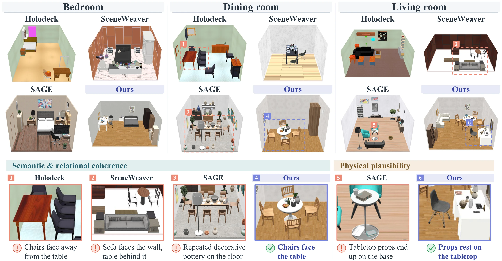

Abstract
Training generalizable embodied agents requires realistic, varied, and simulation-ready indoor environments. Language-guided methods support semantic planning and object-level reasoning, but precise spatial grounding remains difficult. Visual generative models offer rich priors over plausible arrangements, yet their outputs require geometric reasoning to become physically valid 3D scenes. We introduce SceneBloom, an agentic framework that combines visual layout sampling with contract-guided 3D compilation. A hierarchical sampler uses diffusion priors to generate furniture arrangements within functional zones. A compiler then uses relations extracted from each proposal to guide geometric fitting and local pose correction. Across five room types, SceneBloom attains the highest visual quality and physical stability among the compared methods and is the only method with no detected mesh collisions and out-of-bounds objects. Its layouts are also closer to the distribution of real rooms than those of all compared baselines. Object navigation policies trained in these realistic scenes achieve a higher success rate in held-out real scans than those trained on an equal number of real training scans.
Method
Example Scenes
Living room
Bedroom
Dining room
Office
Bathroom
Top: 360° view. Bottom: eye level. Click a view to enlarge it.
Comparison with Baselines
We compare with Holodeck, SceneWeaver and SAGE on 50 scenes in five room types. SceneBloom takes 2.7 min per layout, about 27× faster than SAGE.
Realistic layouts, highest visual quality
SceneBloom layouts are the closest to real rooms in Matterport3D and Scan2CAD, and score highest on all four GPT-4o visual-quality axes.

Physically valid
SceneBloom is the only method with no detected mesh collisions or out-of-bounds objects, and the most physically stable.
Ablation
Visual sampling establishes layout quality, and contracts preserve it through 3D compilation.
Image proposals beat text layouts. Proposals sampled from diffusion beat text layouts written by a VLM, on every metric.
Contracts keep the relations. Contract guidance cuts contract violations from 37.45% to 4.25%, still with no collisions.
BibTeX
@article{liu2026scenebloom,
title = {SceneBloom: Agentic Indoor Environment Generation with Realistic and Diverse Layouts for Embodied Learning},
author = {Liu, Yuhan and Qin, Lianhui and Wan, Shenji},
journal = {arXiv preprint arXiv:2610.32978},
year = {2026}
}